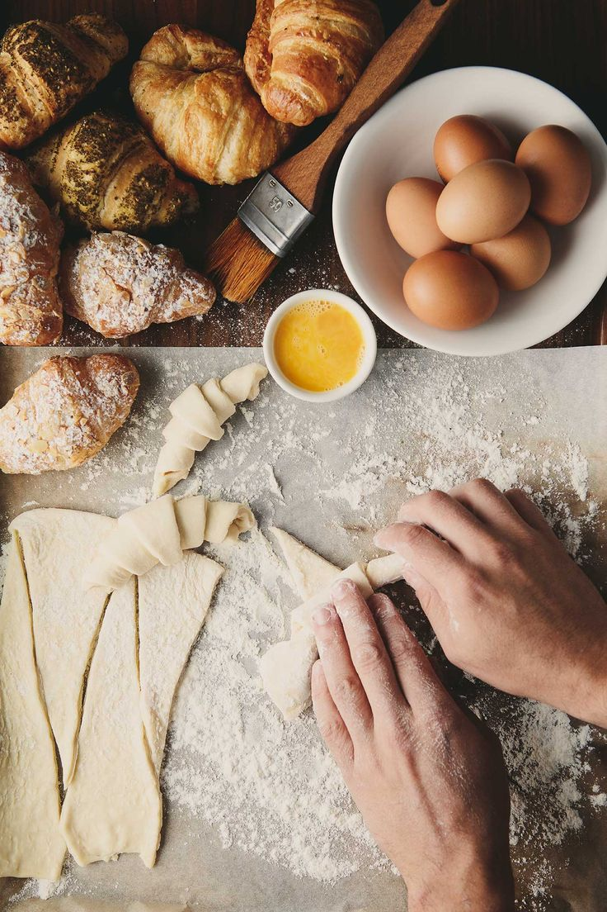
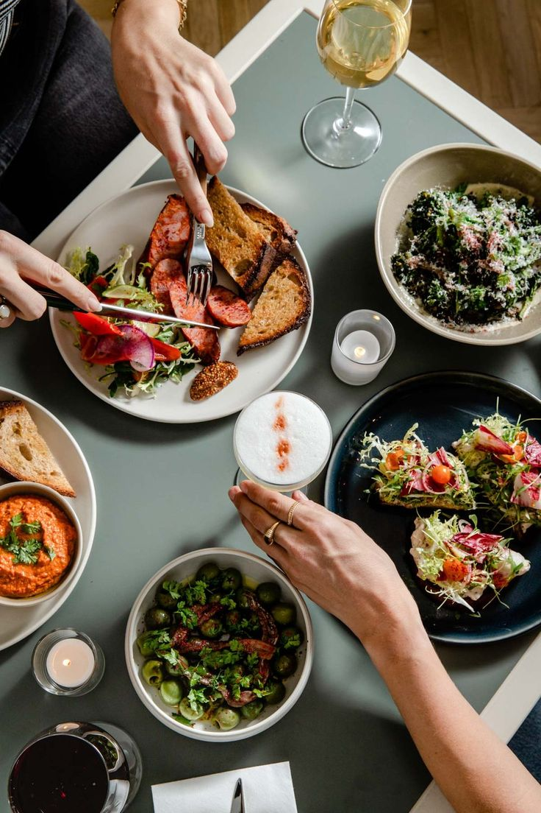

Biography
My name is Natasha. I am a student at Moringa School. I chose to dedicate my website to food photography because of my love for food. I was inspired to bring out mouthwatering visuals from pinterest that bring food to life,deliver images that not only look delicious, but also tell a story.


